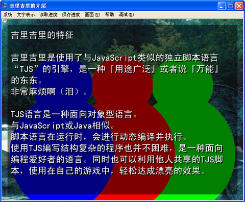
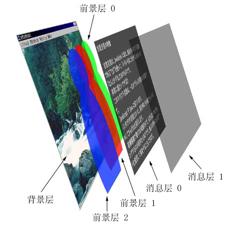

KAG ，或者说吉里吉里的画面，是全部由所谓的「层」叠起来组成的 ( 和 Photoshop 等软件的层差不多 )。
比如说，像下图这样的状况・・・

表示例
层的组成就是这样的。

层的组成
KAG 中，
背景层 base 只有一层，在最底下显示。背景层上面是３层的
前景层 ，分别称为层 0 1 2 。前景层上面又有２层的
消息层。所有的前景层和消息层中的 message1 层，默认状态是不显示的 ( 不显示的层，请用 layopt 指令，指定属性 visible=true ，则变为显示。前景层显示图片的方法和背景层一样，都是使用 image 指令的 )。
KAG 的层又可以分成两部分，那就是被叫做
表页 fore 、
里页 back 的东西。所有表页的内容组成了画面上显示的东西，而里页的内容，画面上是看不到的。里页主要是在使用transition(画面切换效果)时，用于预载想要显示的内容的。
image 指令的 page 属性和 layer 属性是用于指定表页或里页 ( fore / back )、背景层或前景 ( base / 0 / 1 / 2 )的。
Note
前景层 3 层、消息层 2 层，这样的默认设定，是在 Config.tjs 中设定的。
消息层或前景层的初期数量是由 Config.tjs 的 numCharacterLayers 和 numMessageLayers 指定的，另外，使用 laycount 指令的话，还可以在游戏中随时改变层数量。
Note
「背景」「前景」「表」「里」可能很容易搞混。不过总之请记得，page 属性的 fore ，指的是各个层的「表页」，不是指「前景层」。
「表」「里」的指定，对应的是 page 属性的两个值： fore, back ，使用前景层显示图片的话， layer 属性指定为 0 1 2 ・・・，使用背景层的话，指定为 base 。